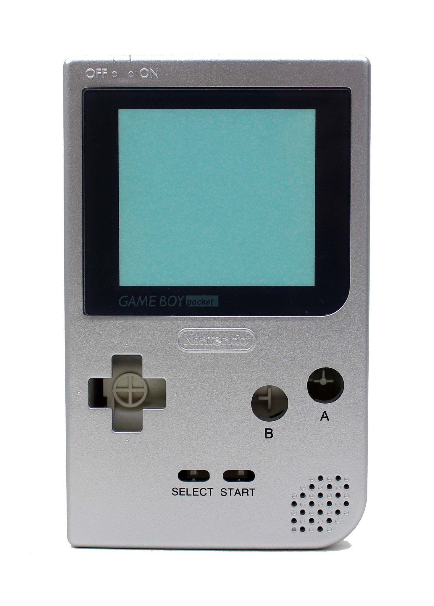
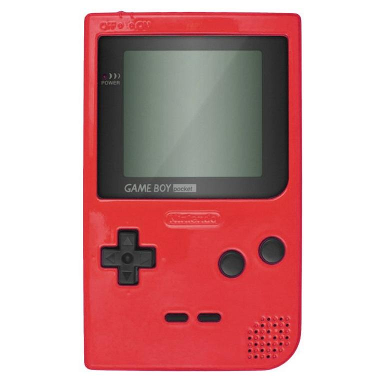
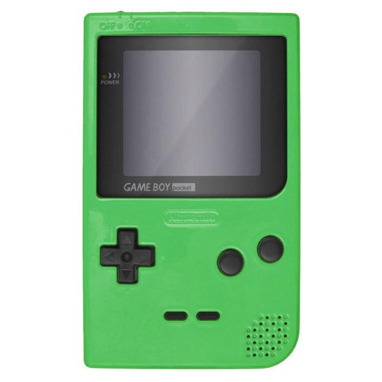
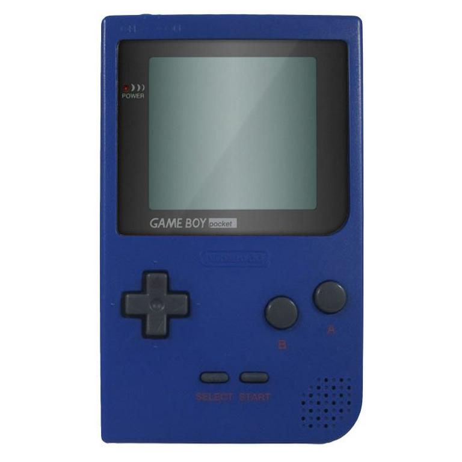

The Gameboy Pocket is the 2nd drivitive to the original gameboy it was released in july of 1996 it played all of the same games as the original gameboy but featured a slimmer design much less blocky than the last and aswell as that it requred only 2 double a's as compared to the 4 previously required to run the original Gameboy.The Gameboy pocket also came in a variety of different colors unlike the simple ugly grey of the original!
   